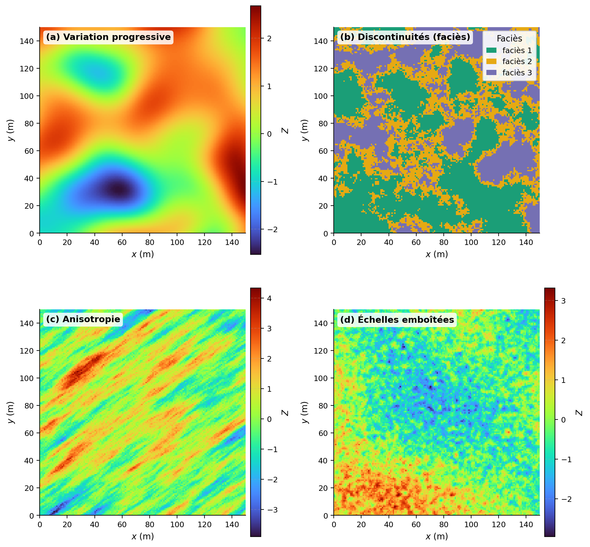
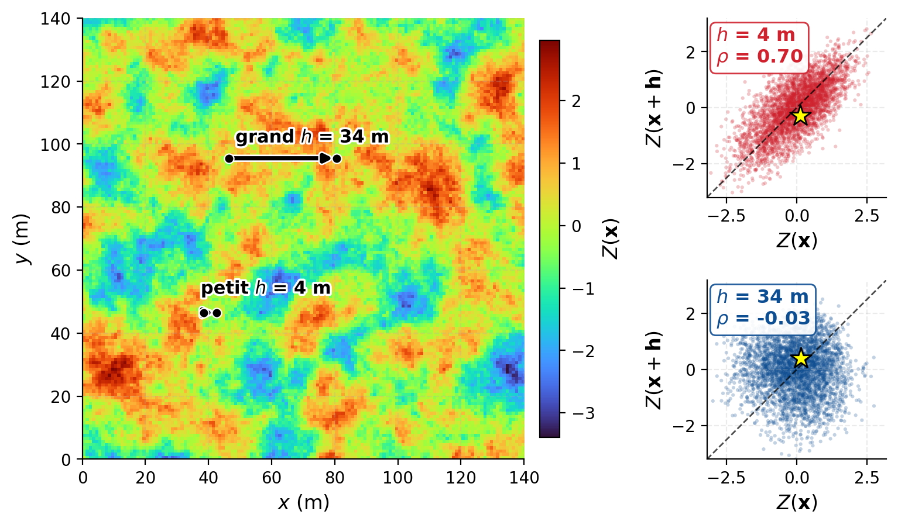
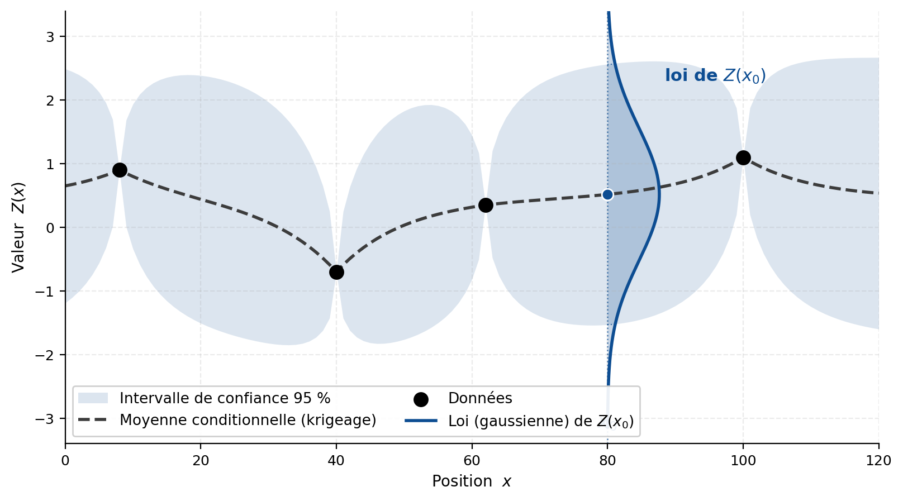
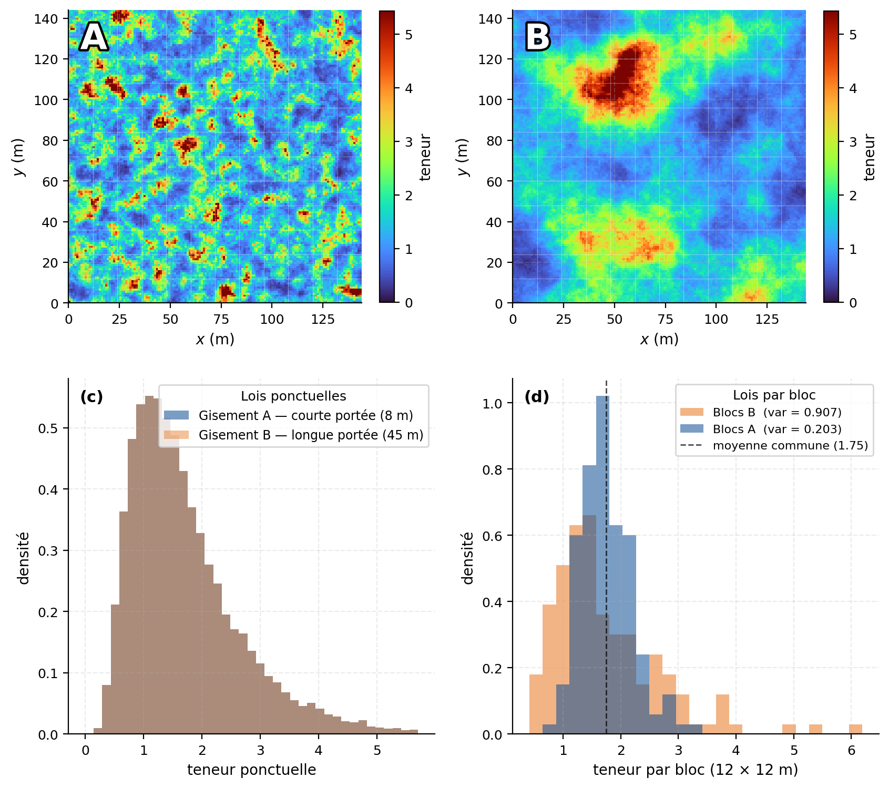
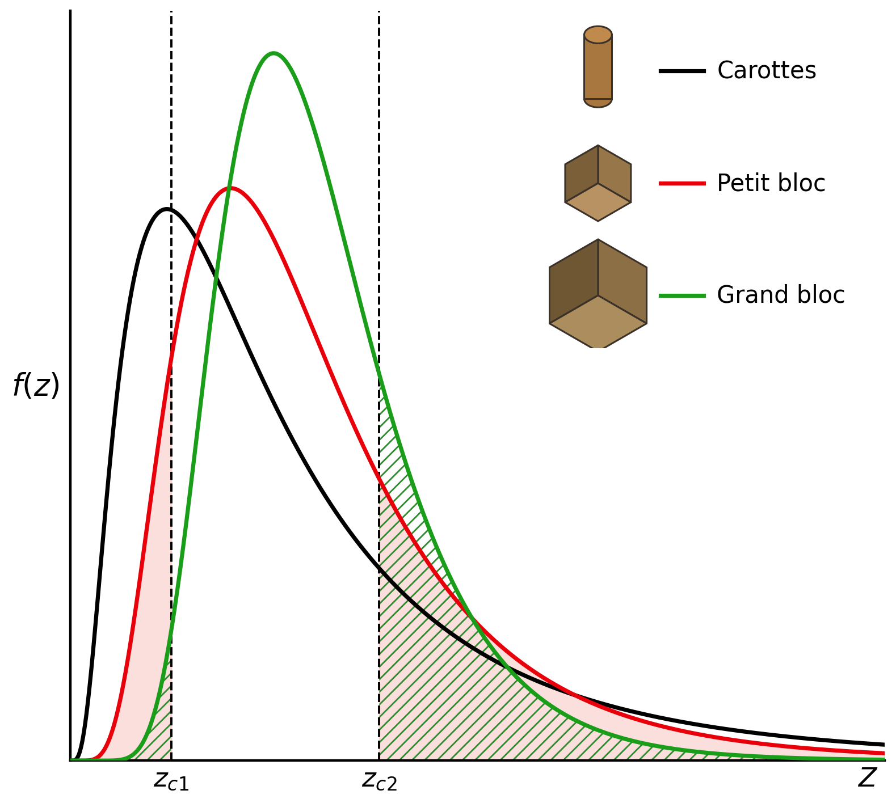
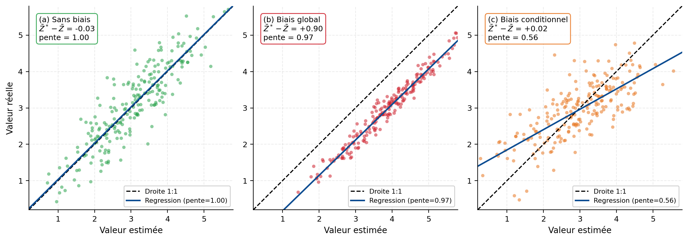
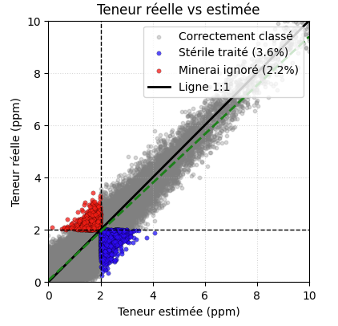

6 Introduction à la géostatistique
Ce chapitre présente les deux concepts fondamentaux à l’origine du développement théorique de la géostatistique : l’effet de support et l’effet d’information. En contexte minier, le nombre de données disponibles demeure presque toujours faible par rapport au volume réel du gisement. Il est donc essentiel de comprendre la variabilité spatiale des teneurs, la portée de l’information fournie par les données et l’incertitude qui subsiste dans le modèle. La variable régionalisée et la fonction aléatoire sont d’abord introduites, puis la corrélation spatiale qui les caractérise. L’effet de support est ensuite étudié de même que l’effet d’information. Ces notions conduisent finalement à l’étude de l’incertitude, du risque et de la prise de décision dans l’estimation des ressources. Des ateliers interactifs permettent de manipuler ces concepts.
Expliquer l’utilité de la géostatistique pour l’estimation des ressources en géologie minière ;
Définir une variable régionalisée et une fonction aléatoire, et reconnaître le rôle de la corrélation spatiale ;
Comprendre l’effet de support et ses conséquences sur la distribution des teneurs ;
Comprendre l’effet d’information et ses conséquences sur la classification minerai/stérile ;
Expliquer les notions d’incertitude, de risque et de prise de décision en contexte minier.
6.1 Pourquoi la géostatistique ?
Les méthodes d’interpolation déterministes attribuent une valeur aux positions non échantillonnées selon une règle mathématique ou géométrique. Plusieurs d’entre elles utilisent la distance aux observations, mais elles ne reposent pas sur un modèle probabiliste de la variabilité spatiale.
Elles ne permettent donc pas, à elles seules, de quantifier l’incertitude associée à une estimation. Elles ne décrivent pas non plus explicitement la dépendance entre les observations ni la redondance de l’information lorsque plusieurs données sont rapprochées ou présentent une organisation spatiale similaire.
La géostatistique aborde le problème dans un cadre probabiliste. Elle cherche d’abord à caractériser la structure spatiale du phénomène, puis à utiliser cette structure pour estimer les valeurs inconnues et quantifier l’incertitude associée à ces estimations. Cette incertitude demeure conditionnelle aux données disponibles, au modèle spatial retenu et aux hypothèses sur lesquelles repose l’analyse.
Le passage de la variable régionalisée à la fonction aléatoire constitue le principal changement de perspective introduit dans ce chapitre.
Variable régionalisée et dépendance spatiale
Un phénomène est dit régionalisé lorsqu’il se déploie dans un domaine spatial et que ses propriétés varient selon la position. La teneur d’un gisement, l’altitude d’une surface ou la conductivité hydraulique d’un aquifère sont des exemples de phénomènes régionalisés.
Une variable régionalisée est une fonction numérique qui décrit l’une des propriétés de ce phénomène.
Une variable régionalisée, notée \(z(\mathbf{x})\), est une fonction définie dans un domaine spatial (\(D\)), qui associe une valeur à chaque position (\(\mathbf{x}\)). Elle représente le phénomène réel étudié, dont seule une partie est généralement observée1.
La variable régionalisée peut présenter une organisation spatiale : ses valeurs peuvent varier progressivement, présenter des discontinuités, des anisotropies ou plusieurs échelles de variabilité (Figure 6.1). La proximité entre deux observations n’implique donc pas nécessairement qu’elles soient semblables, même si cette propriété est fréquente pour de nombreux phénomènes naturels.

Pour représenter cette organisation dans un cadre probabiliste, la géostatistique introduit la notion de dépendance spatiale.
La dépendance spatiale désigne la relation statistique entre les valeurs du phénomène à différentes positions. Elle décrit la manière dont cette relation évolue en fonction du vecteur de séparation entre les positions, notamment de sa distance et de son orientation.
Selon les hypothèses retenues, cette dépendance peut être caractérisée par la covariance, la corrélation ou le variogramme (Figure 6.2). Dans la suite de cet ouvrage, le variogramme sera principalement utilisé pour décrire l’évolution de la variabilité en fonction de la séparation spatiale.

Fonction aléatoire
La variable régionalisée \(z(\mathbf{x})\) représente une réalité unique, mais seulement partiellement connue. Dans un gisement, par exemple, les teneurs existent dans l’ensemble du volume, mais elles ne sont observées qu’aux emplacements échantillonnés. Les données disponibles ne permettent donc pas de déterminer de manière unique les valeurs situées entre les forages.
Pour représenter cette information incomplète, la variable régionalisée est considérée comme une réalisation d’une fonction aléatoire \(Z(\mathbf{x})\).
Une fonction aléatoire, notée \({Z(\mathbf{x}), \mathbf{x}\in D}\), est une famille de variables aléatoires indexées par la position. À chaque position \(\mathbf{x}\) correspond une variable aléatoire \(Z(\mathbf{x})\), tandis que les relations entre les différentes positions sont décrites par leurs lois de probabilité conjointes.
Une réalisation de cette fonction aléatoire correspond à une fonction spatiale particulière \(z(\mathbf{x})\). Dans le cadre géostatistique, le phénomène réel est considéré comme l’une de ces réalisations, tandis que les autres représentent les configurations permises par le modèle probabiliste.
Lorsqu’elles sont conditionnées aux observations, ces réalisations doivent reproduire les données disponibles et respecter la structure spatiale retenue. Leur dispersion permet alors de caractériser l’incertitude dans les secteurs non échantillonnés (Figure 6.3).

Cette approche ne signifie pas que le gisement est aléatoire dans la réalité. La fonction aléatoire constitue plutôt un modèle probabiliste de l’information incomplète dont on dispose. Comme une seule réalisation du phénomène est observable, l’inférence de ses propriétés nécessite des hypothèses supplémentaires, notamment des hypothèses de stationnarité, qui seront introduites au prochain chapitre.
La géostatistique est un ensemble de méthodes probabilistes fondées sur la théorie des fonctions aléatoires. Elle vise à caractériser la variabilité spatiale, à estimer ou à simuler des variables régionalisées et à quantifier l’incertitude associée aux valeurs non observées2.
Applications
Dans de nombreux domaines, la géostatistique répond à une même problématique : caractériser un phénomène spatial à partir d’un nombre limité d’observations localisées.
En géologie minière, elle permet d’estimer la distribution des teneurs entre les forages, de quantifier les ressources et d’évaluer l’incertitude associée au modèle. Les mêmes principes sont appliqués en hydrogéologie pour modéliser les propriétés des aquifères, en géotechnique pour représenter les propriétés des sols et des roches, en géophysique pour interpréter la structure du sous-sol à partir de mesures indirectes, et en environnement pour délimiter les zones contaminées.
Dans tous ces domaines, la géostatistique vise à représenter la variabilité spatiale, à estimer les valeurs non observées et à quantifier l’incertitude associée aux résultats.
Origines : effet de support et effet d’information
Le cadre théorique de la géostatistique a été développé par Georges Matheron à partir des travaux réalisés dans les mines d’or sud-africaines, notamment ceux de l’ingénieur minier Daniel Krige. Ces travaux ont mis en évidence plusieurs difficultés propres à l’estimation des ressources, dont deux demeurent centrales : l’effet de support et l’effet d’information.
- Comment la distribution des teneurs se modifie-t-elle lorsque celles-ci sont définies sur des volumes de tailles différentes?
L’effet de support désigne la modification de la distribution statistique d’une variable lorsque la taille ou la géométrie du volume sur lequel elle est définie varie. L’augmentation du support entraîne généralement une diminution de la variance et une atténuation des valeurs extrêmes.
Une teneur mesurée sur un petit échantillon peut ainsi être très élevée ou très faible, tandis que la teneur moyenne d’un grand bloc varie généralement moins. Ce changement influence directement les quantités de matériau situées au-dessus d’une teneur de coupure.
- Comment l’information disponible au moment de la sélection influence-t-elle les quantités de minerai effectivement récupérables?
L’effet d’information désigne l’écart entre une sélection fondée sur la teneur réelle des unités minières et une sélection fondée sur des teneurs estimées à partir d’une information limitée. Les erreurs d’estimation peuvent entraîner le classement de minerai comme stérile, ou de stérile comme minerai, particulièrement pour les blocs dont la teneur est proche de la teneur de coupure.
L’effet d’information dépend notamment de la quantité et de la qualité des données disponibles, de leur configuration spatiale et de la méthode d’estimation employée. Une information plus précise améliore la sélection des unités minières et réduit les erreurs de classification.
La suite de ce chapitre présente ces deux effets dans le contexte de l’estimation des ressources minières. Les principes introduits demeurent toutefois applicables à d’autres problèmes de modélisation spatiale.
6.2 Effet de support
Le support correspond au domaine physique sur lequel une variable régionalisée est mesurée ou définie. Il se caractérise par sa taille, sa géométrie et son orientation. Un petit support fournit une information plus locale et moins moyennée, tandis qu’un grand support intègre les variations présentes sur un volume plus important.
Le support est le domaine physique, défini par sa taille, sa géométrie et son orientation, sur lequel une variable régionalisée est mesurée, estimée ou moyennée.
Un échantillon de carotte, analysé sur une longueur donnée, présente un volume relativement faible par rapport à celui d’un bloc minier de plsuieurs mètres cubes. La teneur de l’échantillon est mesurée sur le matériau prélevé, tandis que la teneur du bloc minier ne peut être mesurée qu’une fois celui-ci exploité. Il est donc estimée à partir des données disponibles et du modèle spatial retenu.
La valeur estimée d’un bloc constitue donc une représentation imparfaite de sa teneur moyenne réelle. Les données de contrôle de teneur et de production permettent de mieux caractériser cette teneur au moment de l’exploitation, sans toutefois la connaître exactement en raison de l’échantillonnage, de la dilution, des pertes et du mélange des matériaux.
Le passage d’un petit support à un support plus grand modifie la distribution statistique de la variable. Ce phénomène est appelé effet de support. Lorsque le support augmente, les valeurs locales sont moyennées sur des volumes plus étendus. La distribution des teneurs se resserre alors généralement autour de sa moyenne : sa variance diminue et les valeurs extrêmes s’atténuent.
L’effet de support désigne la modification de la distribution statistique d’une variable régionalisée lorsque la taille, la géométrie ou l’orientation de son support change. Pour un support plus grand, la variance est généralement plus faible en raison de la moyenne des valeurs à l’intérieur du volume.
L’importance de cet effet dépend non seulement de la taille du support, mais également de la continuité spatiale du phénomène. Deux gisements peuvent présenter la même moyenne et la même variance à l’échelle des échantillons, mais des distributions différentes à l’échelle des blocs si leur organisation spatiale diffère (Figure 6.4).
Lorsque les teneurs présentent une forte continuité spatiale, les valeurs regroupées dans un même bloc tendent à être semblables. Leur moyenne entraîne alors une réduction relativement limitée de la variance. À l’inverse, lorsque les fortes et les faibles teneurs sont étroitement entremêlées, leur regroupement dans de grands blocs produit un lissage plus important.

Le changement de support ne peut donc pas être étudié indépendamment de la structure spatiale. Celle-ci est notamment décrite par le variogramme, qui sera présenté au prochain chapitre. De manière générale, l’effet de support dépend de la variabilité des teneurs à l’intérieur du bloc et de la relation spatiale entre les valeurs qui y sont regroupées3.

🧮 Atelier interactif 6.1 — Effet du support
En faisant varier la taille des blocs, observez l’évolution des statistiques de deux gisements 2D présentant des continuités spatiales différentes (faible à gauche, forte à droite), mais ayant la même distribution des teneurs à l’échelle ponctuelle (les statistiques sont identiques pour une taille de bloc de 1 m × 1 m). Les cartes, les histogrammes et les fonctions de répartition cumulées se mettent à jour pour refléter l’impact du changement de support sur la distribution des teneurs.
Un support plus petit peut permettre une sélection plus fine du minerai et du stérile, à condition que les données disponibles soient suffisamment nombreuses pour représenter cette échelle. Toutefois, réduire la taille des blocs du modèle ne suffit pas à améliorer la précision de l’estimation ni à accroître la sélectivité réellement applicable lors de l’exploitation.
Il faut donc distinguer la taille des blocs du modèle, qui correspond à une discrétisation numérique, du support réel de la sélection minière. Ce dernier dépend notamment des méthodes d’exploitation, des équipements, du patron de forage et de sautage, de la dilution, des contraintes de stabilité et des coûts.
L’effet de support influence ainsi la comparaison entre les données d’échantillonnage, les estimations du modèle et les unités effectivement exploitées. La géostatistique fournit les outils nécessaires pour représenter ce changement d’échelle et en évaluer les conséquences sur la distribution des teneurs, le tonnage sélectionné et la quantité de métal estimée.
6.3 Effet d’information
Dans un gisement, la teneur réelle de chaque unité minière n’est pas connue au moment de planifier l’exploitation. La sélection du minerai et du stérile repose donc sur des teneurs estimées à partir des forages et du modèle géostatistique.
Si les teneurs réelles de tous les blocs étaient connues, la sélection pourrait être effectuée directement en fonction de la teneur de coupure. En pratique, l’information disponible est limitée et les estimations comportent une incertitude. Certains blocs sont alors classés du mauvais côté de la teneur de coupure. Cette différence entre une sélection fondée sur une information parfaite et une sélection fondée sur les estimations disponibles constitue l’effet d’information.
L’effet d’information désigne la modification des résultats de la sélection du minerai lorsque celle-ci est fondée sur des teneurs estimées plutôt que sur les teneurs réelles des unités minières. Il se manifeste notamment par des erreurs de classification entre le minerai et le stérile.
L’importance de cet effet dépend de la quantité de données, mais également de leur qualité, de leur répartition spatiale, de la continuité des teneurs et de la méthode d’estimation employée. Deux campagnes comprenant le même nombre de forages ne fournissent donc pas nécessairement le même niveau d’information. Des forages regroupés dans un secteur déjà bien connu peuvent être largement redondants, tandis que quelques forages bien positionnés peuvent réduire davantage l’incertitude.
L’objectif d’une campagne de forage n’est donc pas uniquement d’accumuler des observations, mais d’améliorer la connaissance du gisement aux endroits où cette information influence le plus l’estimation et les décisions minières. Le choix de l’emplacement des nouveaux forages doit toutefois tenir compte de leur coût, de leur accessibilité et des objectifs du projet.
Information limitée, erreurs et biais
Même lorsque les analyses sont réalisées correctement, les forages ne donnent accès qu’à une partie du gisement. Une incertitude subsiste entre les observations parce que les teneurs ne sont pas connues partout. Cette incertitude d’estimation suffit à produire un effet d’information.
D’autres sources d’incertitude peuvent s’y ajouter, notamment :
- les erreurs de localisation;
- les erreurs d’échantillonnage et de préparation des carottes;
- les erreurs analytiques en laboratoire;
- les incertitudes liées à l’interprétation géologique;
- les approximations introduites par le modèle et la méthode d’estimation.
Ces différentes sources ne produisent pas nécessairement un biais systématique. Une erreur correspond à l’écart entre une valeur observée ou estimée et la valeur réelle. Un biais apparaît lorsque cet écart présente une tendance systématique, par exemple lorsque les teneurs sont généralement surestimées.
Il faut également distinguer le biais global du biais conditionnel. Une méthode peut préserver correctement la teneur moyenne du gisement tout en surestimant les fortes teneurs et en sous-estimant les faibles teneurs, ou inversement. Les estimations peuvent donc être globalement non biaisées, sans reproduire fidèlement la variabilité locale (Figure 6.6).

Erreurs de classification
Supposons que la teneur de coupure soit fixée à 2 ppm. Les blocs dont la teneur estimée dépasse 2 ppm sont sélectionnés pour le traitement, tandis que les autres sont classés comme stériles ou dirigés vers une autre destination.
Deux erreurs de classification peuvent alors se produire :
- un bloc dont la teneur estimée dépasse 2 ppm peut avoir une teneur réelle inférieure à ce seuil; du matériau non rentable est alors traité;
- un bloc dont la teneur estimée est inférieure à 2 ppm peut avoir une teneur réelle supérieure à ce seuil; du minerai potentiellement valorisable est alors rejeté ou laissé en place.
Ces situations correspondent respectivement à des faux positifs et à des faux négatifs. Elles réduisent l’efficacité de la sélection par rapport à une situation théorique où les teneurs réelles seraient parfaitement connues.
Comme le montre la Figure 6.7, les teneurs estimées sont comparées aux teneurs réelles. La droite 1:1 représente une correspondance parfaite entre les deux valeurs. Un point situé sous cette droite correspond à une surestimation de la teneur, tandis qu’un point situé au-dessus correspond à une sous-estimation.
La dispersion autour de la droite 1:1 représente l’incertitude d’estimation. Une droite de régression différente de la droite 1:1 peut également indiquer un biais conditionnel ou un lissage des estimations. Elle ne suffit toutefois pas, à elle seule, à démontrer l’existence d’un biais sur la teneur moyenne du gisement.

🧮 Atelier interactif 6.2 — Effet d’information
Dans cet atelier, vous pouvez modifier le biais, le bruit ajouté aux estimations et la teneur de coupure. Observez comment ces paramètres modifient le champ estimé, la relation entre les teneurs réelles et estimées ainsi que la classification des blocs.
Les points bleus représentent les blocs qui seraient traités alors que leur teneur réelle est inférieure à la teneur de coupure. Les points rouges représentent les blocs qui seraient rejetés alors que leur teneur réelle dépasse cette teneur. La droite 1:1 permet de visualiser une correspondance parfaite, tandis que la dispersion des points et la droite de régression renseignent sur les erreurs d’estimation et les éventuels biais conditionnels.
6.4 Incertitude, risque et prise de décision
Les sections précédentes ont montré que les données disponibles ne permettent qu’une connaissance partielle du gisement. Il faut maintenant distinguer trois notions liées, mais différentes : l’incertitude, le risque et la prise de décision.
L’incertitude représente ce qui demeure inconnu ou imparfaitement connu compte tenu des données et des hypothèses retenues. Elle peut concerner la teneur d’un bloc, la géométrie d’une unité géologique, la continuité de la minéralisation ou les paramètres du modèle.
L’incertitude désigne le manque de connaissance concernant une valeur, une propriété ou un état du système. En géostatistique, elle représente l’ensemble des valeurs ou des configurations qui demeurent plausibles compte tenu des données et du modèle retenu.
L’incertitude devient un risque lorsqu’elle peut influencer les conséquences d’une décision. Le risque dépend donc à la fois de la probabilité d’un résultat défavorable et de l’importance de ses conséquences.
Le risque résulte de la combinaison de la probabilité qu’un événement survienne et de l’ampleur de ses conséquences sur les objectifs du projet.
La prise de décision consiste à choisir une action parmi plusieurs possibilités en fonction des objectifs du projet, de l’information disponible et des risques associés.
La prise de décision est le processus par lequel une action est sélectionnée parmi plusieurs options en tenant compte des objectifs, de l’information disponible, de l’incertitude et des conséquences possibles.
Une zone peut ainsi être très incertaine sans représenter un risque important si elle influence peu le projet. À l’inverse, une incertitude modérée peut devenir critique lorsqu’elle concerne un secteur situé près de la teneur de coupure ou déterminant pour la planification minière.
La géostatistique ne supprime pas l’incertitude. Elle permet de la caractériser et d’évaluer ses conséquences afin de mieux soutenir la prise de décision.
Exemples d’incertitude :
- Teneur réelle entre deux forages;
- Géométrie et limites d’un corps minéralisé;
- Continuité spatiale des zones à forte teneur, notamment la présence ou l’absence de lentilles minéralisées;
- Position des transitions entre les unités géologiques;
- Interprétation des failles, des plis et des fractures ainsi que de leur influence sur la minéralisation;
- Épaisseur d’une zone minéralisée entre les points d’observation;
- Variabilité à petite échelle non résolue par l’échantillonnage;
- Présence et étendue de zones d’altération ou de lessivage;
- Erreurs de localisation, d’échantillonnage, de préparation ou d’analyse en laboratoire;
- Interprétation géologique fondée sur les connaissances et les données disponibles.
Exemples de risque :
- Envoyer à l’usine un matériau dont la teneur réelle est inférieure à la teneur de coupure;
- Diriger vers la halde à stérile ou laisser en place du minerai économiquement exploitable;
- Mal planifier les séquences d’exploitation en raison d’une géométrie incorrectement définie;
- Surdimensionner ou sous-dimensionner les infrastructures de traitement;
- Rencontrer des problèmes de stabilité en raison d’une caractérisation insuffisante des structures géologiques;
- Accroître la dilution en raison d’une mauvaise délimitation des zones minéralisées;
- Gérer inadéquatement les stériles ou les rejets, avec des conséquences environnementales;
- Surestimer le tonnage ou la teneur en raison d’une continuité spatiale mal évaluée;
- Obtenir une production différente des prévisions en raison d’une variabilité sous-estimée;
- Rencontrer des conditions de terrain différentes de celles anticipées, notamment en matière de dureté ou de fragmentation.
Exemples de prise de décision :
- Déterminer la teneur de coupure du gisement;
- Classifier les ressources comme mesurées, indiquées ou présumées;
- Choisir l’emplacement de nouveaux forages d’exploration ou intercalaires;
- Délimiter les zones de minerai et de stérile;
- Planifier la séquence d’extraction des blocs;
- Définir le support d’estimation et l’unité de sélection minière;
- Décider de poursuivre, de modifier ou d’interrompre le développement d’un projet;
- Définir les hypothèses de dilution, de pertes minières et de récupération;
- Prioriser certaines zones du gisement selon leur valeur et leur niveau d’incertitude;
- Mettre à jour le modèle et adapter la stratégie d’exploitation à mesure que de nouvelles données deviennent disponibles.
La géostatistique s’applique également aux séries temporelles. La variable régionalisée peut alors représenter, par exemple, la teneur du minerai alimentant un concentrateur au fil du temps, dont on étudie la variabilité afin d’optimiser le traitement chimique au concentrateur.↩︎
La discipline permet aussi l’estimation, la simulation et la modélisation conjointe de plusieurs variables régionalisées : c’est le cas multivarié.↩︎
Cette propriété peut être exprimée par la relation de Krige : \(D^2(v,G)=D^2(v,V)+D^2(V,G)\), où \(v\), \(V\) et \(G\) représentent des supports ou des domaines emboîtés. La variabilité à l’échelle fine peut ainsi être décomposée entre la variabilité à l’intérieur des blocs et celle entre les blocs. Lorsque le support \(V\) augmente, la moyenne effectuée à l’intérieur des blocs réduit généralement leur variance. Cette relation sera approfondie au chapitre 8.↩︎